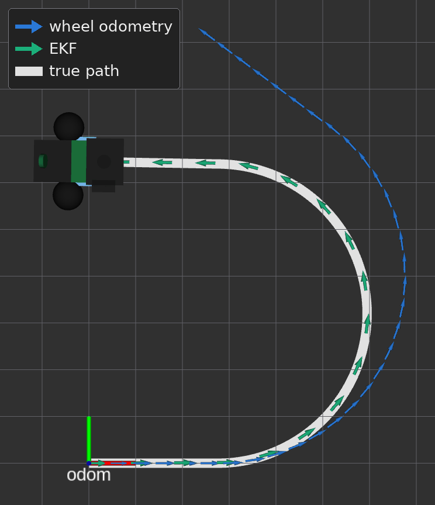
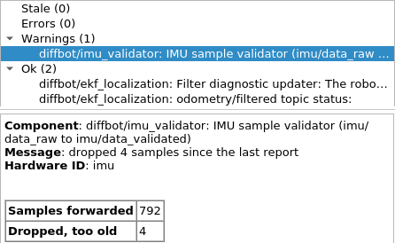

Localization: Wheel Odometry and IMU (EKF)
DiffBot and Remo estimate how far they drove and turned from their wheels. The wheels' estimate of turning is the weak part. A wheel that slips, or a wheel separation \(b\) that is a little off in the configuration, makes the estimated turn too small or too large. The wheel separation is the distance between the two drive wheels. The error in the heading then grows into an error in the position, the further the robot drives.
The estimate from the wheels is the odometry. The drive controller computes the odometry from the wheel encoders' angles. The odometry has two parts:
- A pose in the
odomframe: the position \(x\), \(y\) and the heading \(\theta\). - A velocity in the robot's own frame,
base_footprint: the forward speed \(v_x\) and the yaw rate \(\omega_z\), the angular velocity about the upward axis.
The figure shows where the two frames sit on the floor, seen from above. A frame is a coordinate system with a name:
- The
odomframe: stays at one place. After a fresh start, its origin is where the robot stood when the odometry started. - The frame
base_footprint: moves with the robot. Its origin lies on the floor below the middle of the wheel axle. Its x axis points forward and its y axis to the left, as REP 103's axis orientation says for a robot's body.
The position \(x\), \(y\) says where base_footprint lies along the two axes of odom. The heading \(\theta\) is the angle from the x axis of odom to the robot's forward direction. The transform odom → base_footprint holds this pose.
odom is where the robot's frame base_footprint was at the start, with its x axis in the direction that the robot faced. The pose (x, y, θ) is the robot's estimated position and heading in odom. The figure leaves the drift out.REP 105's odom frame is ROS's convention for such a frame: the robot's pose in the odom frame changes smoothly, without jumps, but drifts over time. The odom frame itself is fixed in the world. What drifts is the estimate: the odometry's small errors add up, so the estimated pose moves away from the robot's true pose. During navigation on a map, amcl, the node that estimates the robot's pose on a known map, adjusts the transform map → odom to make up for this error. map is the frame of that map. The EKF alone doesn't publish map → odom. REP 105's section on the relationship between the frames has a diagram of how the frames map and odom and the robot's base frame are attached to each other.
The IMU's gyroscope measures the turn directly. The gyroscope's yaw rate \(\omega_z\) doesn't depend on the wheels.
With ekf:=true, an extended Kalman filter (EKF) from the robot_localization package combines both sensors:
- The forward speed \(v_x\): the filter takes the forward speed from the wheels.
- The yaw rate \(\omega_z\): the filter takes the yaw rate mostly from the gyroscope, because the gyroscope's variance \(\sigma^2\) is far smaller than the wheels'. A variance says how far a value's errors spread. The smaller the variance, the more the filter trusts the value.
The filter publishes its estimate in two forms, which navigation and RViz use:
- on the topic
/diffbot/odometry/filtered - as the transform
odom → base_footprinton the topic/tf
Not tested on the robot yet
The EKF runs in the simulation and in the tests that How it's tested lists. On Remo, the IMU's rate, axes and noise passed the bench checks, but the EKF itself hasn't run on a robot yet. Remo's URDF model in remo_description includes the IMU's position and orientation as the same bench checks confirmed them. DiffBot uses the same BNO055, but its mounting and the firmware still need checking on DiffBot. The variances that the firmware and the drive controller publish on the robot, and the IMU sample validator's time limits, are starting values, not measurements.
Reading the code on this page
- The excerpts on this page show fixed revisions: the diffbot repository at one commit, robot_localization 2.7.7, ros_controllers 0.22.0, gazebo_ros_pkgs 2.9.3, the navigation stack 1.17.3 and ROS's common_msgs at one commit. The line numbers are those of the original files.
- The link in the sentence before an excerpt opens that revision and those lines on GitHub.
- Where a section names a function, a class, a member or a setting of the code, the name links to its line at that revision or to the section of this page that shows it, or the section shows the name in an excerpt. A file name links to the file, for the diffbot repository to its current version.
What goes in and what comes out
Measurements go into the filter, and an estimate of the robot's motion comes out. Three terms and their symbols describe this. The figures and the formulas on this page use them:
- The state \(\mathbf{x}\): the values that describe the robot's motion, such as its position, its heading and its velocities. These are the values that the filter is to find out. The filter's state lists all 15.
- A measurement \(\mathbf{z}\): the values that one message of a sensor delivers. The index names the sensor: \(\mathbf{z}_\text{wheels}\) is a measurement of the wheel odometry, and \(\mathbf{z}_\text{IMU}\) is a measurement of the IMU.
- The estimate \(\hat{\mathbf{x}}\): the filter can't know the true state \(\mathbf{x}\). From the measurements, the filter computes its best guess of the state. The hat over the letter marks an estimated value.
A bold letter is a vector: the letter stands for several values at once.
The figure shows the way of the values as a loop, in two variants. The tab Real robot shows the loop on the robot. The tab Simulation shows the same loop with Gazebo in the place of the robot's hardware. From the drive controller and the IMU sample validator on, both tabs show the same parts and topics at the same places. The topics' names in the figure leave out their namespace /diffbot, so imu/data_raw stands for the topic /diffbot/imu/data_raw.
Read the figure from the robot at the top down to the filter and to RViz, and then along the dashed arrows back up to the robot:
- The sensors: a blue dot marks where the wheels' angles come from, and an orange square marks the IMU. \(v_x\) and \(\omega_z\) at the robot show the directions of the forward speed and of the yaw rate.
- The way to the filter: on the real robot, the firmware on the Teensy reads both sensors. In the simulation, Gazebo computes the wheel joints' angles and the IMU sensor's values, and two Gazebo plugins pass them on. A plugin is code that Gazebo loads and runs as a part of itself. The drive controller turns the wheel angles into the wheel odometry, the measurement \(\mathbf{z}_\text{wheels}\). The IMU sample validator forwards the IMU's valid samples, the measurement \(\mathbf{z}_\text{IMU}\). The label at an arrow names the topic that carries the values.
- The filter: the EKF fuses both measurements into its estimate \(\hat{\mathbf{x}}\).
- The two outputs: the EKF publishes the pose and the velocities of its estimate on a topic, and the pose as a transform. Both arrows end in a sketch of RViz with
odomas its Fixed Frame. RViz can show the same two outputs for the real robot and for the simulation. RViz's RobotModel display places the robot where the transform puts it, and an Odometry display keeps arrows at poses of the topic's messages. The dashed line of the transform, the letters at the axes and the heading angle \(\theta\) are added in the sketch to explain the pose. RViz doesn't draw them. The sketch shows the same pose as the figure of theodomframe. - The way back to the wheels: the dashed gray arrows show the way of the velocity commands. A velocity command says how fast the robot is to drive forward and how fast the robot is to turn: the target forward speed \(v_x^*\) and the target yaw rate \(\omega_z^*\). The star marks a target value. A command comes from a teleop node, with which a person steers the robot, or from the planner in
move_base, the node that computes the commands that lead the robot to a navigation goal. The planner reads the EKF's two outputs, which the thin green arrow at the figure's right edge shows. The drive controller turns each command into two target wheel speeds, the angular velocities \(\omega_\text{l}^*\) for the left wheel and \(\omega_\text{r}^*\) for the right wheel. On the real robot, the firmware on the Teensy drives the motors so that the wheels reach these speeds. In the simulation, the Gazebo plugingazebo_ros_controlapplies a torque \(\tau\) to each wheel joint. A torque is the turning effect of a force about an axis, here the joint's axis. The robot moves, the sensors measure the motion, and the loop starts again.
- from the wheels
- from the IMU
- the filter's estimate
- commands, back to the wheels
- from the wheels
- from the IMU
- the filter's estimate
- commands, back to the wheels
How it fits together goes through the nodes and the topics of the figure one by one.
The formulas below write the two measurements and the published estimate as vectors, with the symbols of the figure and of the filter's state. The position \(x\), \(y\) is in m, the heading \(\theta\) in rad, the speeds \(v_x\), \(v_y\) in m/s and the yaw rate \(\omega_z\) in rad/s.
The wheel odometry's measurement is the three velocities that the filter fuses from one odometry message:
The IMU's measurement is the yaw rate of one validated sample:
The topic carries the estimated pose in the odom frame and the estimated velocities in the frame base_footprint. With two_d_mode, the height, roll, pitch and their velocities stay at 0. The message stores the orientation as a quaternion, which here holds the heading \(\theta\). The six values that can differ from 0 form this vector:
The list says more about each part:
- In, on DiffBot and Remo: two measurements. The wheel odometry gives the forward speed \(v_x\) and the yaw rate \(\omega_z\) that the drive controller computes from the wheel encoders, and the sideways speed \(v_y\), which the controller sets to 0 for a differential drive. The IMU gives the yaw rate \(\omega_z\) that its gyroscope measures. What the filter fuses says why the filter takes these values and no others.
- In, possible but not fed here: robot_localization can fuse any number of inputs of four kinds, which are odometry, poses, velocities and IMUs. robot_localization's page on preparing the sensor data says what each kind of message has to contain. Examples of such inputs are a GPS position \(x\), \(y\), a pose \(x\), \(y\), \(\theta\) from a camera, a second IMU, and more odometry, for example visual odometry. A GPS position needs a conversion first, which robot_localization's page on integrating GPS data describes with the node
navsat_transform_node. On DiffBot and Remo, the filter gets none of these. - The estimate: robot_localization's state has 15 values. They are the position \(x\), \(y\), \(z\), the orientation as roll, pitch and the heading \(\theta\), the linear velocity \(v_x\), \(v_y\), \(v_z\), the angular velocity \(\omega_x\), \(\omega_y\), \(\omega_z\) and the linear acceleration \(a_x\), \(a_y\), \(a_z\).
two_d_modekeeps the height \(z\), roll, pitch, their velocities \(v_z\), \(\omega_x\), \(\omega_y\) and the vertical acceleration \(a_z\) at 0, for a robot on a flat floor. Of what remains, the topic's message carries \(x\), \(y\), \(\theta\), \(v_x\), \(v_y\) and \(\omega_z\). The accelerations \(a_x\) and \(a_y\) stay inside the filter. - Out: the filter publishes its estimate in two forms, because ROS nodes get a robot's motion in two ways. The two outputs explains both forms and names the nodes that read each.
The two outputs
- The topic
/diffbot/odometry/filtered: carries the pose and the velocities of the filter's estimate, with their covariances, as anav_msgs/Odometrymessage. The message has the pose \(x\), \(y\), \(\theta\) in theodomframe and the velocities \(v_x\), \(v_y\), \(\omega_z\) in the robot's framebase_footprint. The message has no field for the accelerations of the filter's state. A node that needs the velocities or the uncertainty subscribes to this topic. - The transform
odom → base_footprinton the topic/tf: carries only the pose, as a translation and a rotation. A transform has no velocity and no covariance. TF, ROS's transform library, joins this transform with the robot's other transforms. So a node can ask TF where any frame of the robot is in theodomframe, without knowing which node estimated the pose.
The two forms hold the same pose. Each time the filter publishes, the filter builds the odometry message filteredPosition from its state and copies the message's pose into the transform worldBaseLinkTransMsg_, as lines 1955–1965 of ros_filter.cpp in robot_localization 2.7.7 show:
ros_filter.cpp, lines 1955–1965: the transform is a copy of the message's pose
1955 1956 1957 1958 1959 1960 1961 1962 1963 1964 1965 | |
The ROS navigation stack needs the odometry in both forms. With ekf:=true, the EKF supplies both. Two sources say what is needed:
- The transform: REP 105 says in its section on frame authorities that one of the odometry sources computes and broadcasts the transform from
odomto the robot's base frame. So only one node may publish this transform, here the EKF. - Both: the navigation stack's guide on setting up a robot says that the navigation stack requires the odometry both through TF and as a
nav_msgs/Odometrymessage.
The following nodes read the two outputs when ekf:=true:
- The topic: the local planner that
move_baseand Move Base Flex load, by defaultDWAPlannerROS, reads the robot's current velocities from the topic/diffbot/odometry/filtered: \(v_x\), \(v_y\) and \(\omega_z\), the message's fieldstwist.twist.linear.x,twist.twist.linear.yandtwist.twist.angular.z. The planners' odometry topic shows the launch files' lines that select this topic. RViz can show the topic's poses with an Odometry display, as in Comparing the two odometries. - The transform: everything that asks TF where the robot is. RViz places the robot in its view with the transform. amcl, which localizes the robot on a map, asks TF for the robot's pose in the
odomframe. The planners' costmaps ask TF for the robot's pose in their own frames, the local costmap inodomand the global costmap inmap. Each of these requests passes through the transformodom → base_footprint.
The planner's subscriber is the function odomCallback() of the class OdometryHelperRos, which copies the three velocities and child_frame_id from each message, as lines 48–59 of odometry_helper_ros.cpp in the navigation stack 1.17.3 show:
odometry_helper_ros.cpp, lines 48–59: the velocities that the local planner reads
48 49 50 51 52 53 54 55 56 57 58 59 | |
How it fits together
This section goes through the nodes and the topics of the loop figure, in the figure's order, and says where the real robot and the simulation differ. On the way to the filter, the data takes two branches that meet at the EKF. The wheels' angles pass the drive controller, step 2 of the list. The IMU's samples pass the IMU sample validator, step 3. The sensors', the odometry's and the commands' topics are in the /diffbot namespace. The transform is published on the global topic /tf.
- The source of the sensors' values: the real robot and the simulation differ here.
- Real robot: the firmware on the Teensy reads the wheel encoders and the BNO055. rosserial, the connection between the Teensy and the robot's single-board computer (SBC), turns what the firmware sends into ROS topics. The firmware publishes the wheels' angles and the wheels' angular velocities \(\omega_\text{l}\) and \(\omega_\text{r}\), in rad/s, on the topic
/diffbot/measured_joint_states. The firmware publishes the IMU's samples on the topic/diffbot/imu/data_rawat 50 Hz, as IMU: Bosch BNO055 explains. - Simulation: Gazebo computes the wheel joints' angles and the IMU sensor's values. The Gazebo plugin
gazebo_ros_controlreads the wheel joints' angles inside Gazebo, without a topic. The IMU sensor's plugin publishes the topic/diffbot/imu/gazebo, and the small adapterimu_raw_adapter.pyrepublishes its samples on the topic/diffbot/imu/data_raw, as the Simulation page's IMU section explains.
- Real robot: the firmware on the Teensy reads the wheel encoders and the BNO055. rosserial, the connection between the Teensy and the robot's single-board computer (SBC), turns what the firmware sends into ROS topics. The firmware publishes the wheels' angles and the wheels' angular velocities \(\omega_\text{l}\) and \(\omega_\text{r}\), in rad/s, on the topic
- The wheels' branch, the drive controller:
mobile_base_controller, a diff_drive_controller, computes the wheel odometry from the wheels' angles and publishes the wheel odometry on the topic/diffbot/mobile_base_controller/odom. On the real robot, the drive controller runs in the nodediffbot_base, whose hardware interface takes the wheels' angles from the topic/diffbot/measured_joint_states. In the simulation, the drive controller runs inside Gazebo, ingazebo_ros_control. With the EKF on, the drive controller doesn't publish the transformodom → base_footprint. Two nodes that publish the same transform would make the robot's pose jump between their two estimates. - The IMU's branch, the IMU sample validator: the node
imu_validator.pysubscribes to the topic/diffbot/imu/data_raw. The validator checks each sample against what this EKF configuration needs and forwards the valid samples, unchanged, on the topic/diffbot/imu/data_validated. The IMU sample validator lists its checks. - The EKF: the node
/diffbot/ekf_localizationsubscribes to the wheel odometry on the topic/diffbot/mobile_base_controller/odomand to the validated samples on the topic/diffbot/imu/data_validated. The EKF fuses the two. The EKF publishes the filtered odometry on the topic/diffbot/odometry/filteredand the transformodom → base_footprinton the topic/tf. - The readers of the two outputs: RViz can show both outputs, as in the figure's sketch, for the real robot and for the simulation alike. For the topic, RViz needs an Odometry display, which Comparing the two odometries sets up. The planner in
move_baseor in Move Base Flex reads both outputs too. The two outputs names every node that reads them. -
The velocity commands: a node that wants the robot to move publishes
geometry_msgs/Twistmessages on the topic/diffbot/mobile_base_controller/cmd_vel. The drive controller subscribes to this topic and uses two values of a command:linear.x, the target forward speed \(v_x^*\) in m/s, andangular.z, the target yaw rate \(\omega_z^*\) in rad/s. The launch files of the diffbot repository start three kinds of nodes that publish commands:- A teleop node for the keyboard:
keyboard_teleop.launchstartsteleop_twist_keyboard, which turns key presses into commands. - A teleop window: in the simulation,
diffbot_control.launchstartsrqt_robot_steering, a window with sliders to drive the robot. - The planner:
move_baseand Move Base Flex compute the commands that lead the robot to a goal. Withekf:=true, the planner reads the EKF's two outputs, so the EKF's estimate is part of the loop. The planners' odometry topic shows the lines that connect the planner to both topics.
The EKF doesn't read the velocity commands. robot_localization can use the commands in its prediction with the setting
use_control, whose default isfalse, as robot_localization's description ofuse_controlsays.ekf.yamldoesn't setuse_control, so the figure has no arrow from the commands to the EKF. - A teleop node for the keyboard:
-
The way back to the wheels: the drive controller first limits the command's velocities and accelerations to the limits in
diffbot_control.yaml. From the limited command, the drive controller computes two target wheel speeds in rad/s, the angular velocities \(\omega_\text{l}^*\) for the left wheel and \(\omega_\text{r}^*\) for the right wheel:\[ \omega_\text{l}^* = \frac{v_x^* - \omega_z^* \, b / 2}{r}, \qquad \omega_\text{r}^* = \frac{v_x^* + \omega_z^* \, b / 2}{r} \]\(b\) is the wheel separation and \(r\) is the wheel radius, both in m. The real robot and the simulation differ in what happens to the two targets.
- Real robot: the hardware interface in the node
diffbot_basepublishes the two targets on the topic/diffbot/wheel_cmd_velocities. The firmware on the Teensy receives them through rosserial. For each motor, a proportional–integral–derivative (PID) controller in the firmware compares the wheel's target with the wheel's angular velocity that the encoder measures, \(\omega_\text{l}\) or \(\omega_\text{r}\), and sets the motor driver's output for this motor. Low-Level PID Approach explains the firmware. - Simulation:
gazebo_ros_controlgets the two targets inside Gazebo, without a topic. For each wheel joint, a PID controller ofgazebo_ros_controlcompares the target with the joint's angular velocity and applies a torque \(\tau\) in N m to the joint. Turning a wheel-speed command into torque explains this PID controller. The controller's gains are in the robot'spid.yaml, for Remodiffbot_control/config/remo/pid.yaml.
The wheels turn, the robot moves, and the sensors of step 1 measure the motion.
- Real robot: the hardware interface in the node
The collapsed box shows the code of step 7, from a velocity command to the wheels.
The way back in the code: from a velocity command to the wheels
The table lists the quantities of step 7 with their names in the code of the four excerpts:
| Symbol | Unit | Quantity | Names in the code |
|---|---|---|---|
| \(v_x^*\) | m/s | target forward speed, after the limits | curr_cmd.lin |
| \(\omega_z^*\) | rad/s | target yaw rate, after the limits | curr_cmd.ang |
| \(b\) | m | wheel separation | ws |
| \(r\) | m | wheel radius | lwr for the left wheel, rwr for the right wheel |
| \(\omega_\text{l}^*\), \(\omega_\text{r}^*\) | rad/s | target wheel speeds | vel_left and vel_right, joint_velocity_commands_, wheel_cmd_velocity_left_ and wheel_cmd_velocity_right_, joint_velocity_command_ |
| \(\omega_\text{l}\), \(\omega_\text{r}\) | rad/s | measured wheel speeds | angular_velocity_ of joint_state_left_ and joint_state_right_, joint_velocity_ |
| \(\tau\) | N m | torque on a wheel joint | effort |
The drive controller's function update() computes vel_left and vel_right, the two target wheel speeds, from curr_cmd.lin and curr_cmd.ang, the limited command, the wheel separation ws and the wheel radii lwr and rwr. setCommand() hands each target to the hardware interface, as lines 491–500 of diff_drive_controller.cpp in ros_controllers 0.22.0 show:
491 492 493 494 495 496 497 498 499 500 | |
On the real robot, the control loop of the node diffbot_base calls the hardware interface's function DiffBotHWInterface::write() after each update() of the drive controller. write() first scales the left target by (gain_ - trim_) / motor_constant_ and the right target by (gain_ + trim_) / motor_constant_. Both factors are 1 with the settings gain, trim and motor_constant in base.yaml. write() then copies the two targets from joint_velocity_commands_ into the message wheel_cmd_msg and publishes the message, as lines 169–186 of diffbot_hw_interface.cpp show:
169 170 171 172 173 174 175 176 177 178 179 180 181 182 183 184 185 186 | |
In the firmware, the function WheelControl::step() calls BaseController::read() on each control step. WheelControl::step() then calls BaseController::write(), unless the last command is older than the command timeout. BaseController::write() computes the two motor outputs motor_cmd_left_ and motor_cmd_right_ with the PID controllers motor_pid_left_ and motor_pid_right_. Each PID controller gets its wheel's target, wheel_cmd_velocity_left_ or wheel_cmd_velocity_right_, and the wheel's measured angular_velocity_. setSpeed() passes each output to the motor driver, as lines 484–488 of base_controller.h show:
484 485 486 487 488 | |
In the simulation, the update callback of gazebo_ros_control, GazeboRosControlPlugin::Update(), calls DefaultRobotHWSim::readSim(), then the controllers' update() and then DefaultRobotHWSim::writeSim(). writeSim() computes the error between the target joint_velocity_command_ and the joint's velocity joint_velocity_. The PID controller pid_controllers_ turns the error into the torque effort, which clamp() keeps within the joint's effort limit. SetForce() applies the torque to Gazebo's joint, as lines 370–380 of default_robot_hw_sim.cpp in gazebo_ros_pkgs 2.9.3 show:
370 371 372 373 374 375 376 377 378 379 380 | |
ekf.launch in diffbot_control starts the validator and the EKF, for the robot and the simulation alike.
Running it
The ekf argument switches the EKF on. The EKF is off by default. Pass ekf:=true to the launch file that you start:
| Where | Command |
|---|---|
| On the robot, when you start the bringup yourself | roslaunch diffbot_bringup bringup.launch model:=remo ekf:=true (or bringup_with_laser.launch) |
| In the simulation | roslaunch diffbot_gazebo diffbot.launch model:=remo ekf:=true |
| Simulation with navigation | roslaunch diffbot_navigation diffbot.launch model:=remo ekf:=true |
| Navigation on the development PC, for a robot that runs with the EKF | roslaunch diffbot_navigation diffbot_hw.launch model:=remo ekf:=true |
The four commands start these launch files: diffbot_bringup/launch/bringup.launch, diffbot_gazebo/launch/diffbot.launch, diffbot_navigation/launch/diffbot.launch and diffbot_navigation/launch/diffbot_hw.launch.
Which launch file starts what
A roslaunch command names one launch file. roslaunch reads that file and every file that it includes with the <include> tag, directly or through another included file. roslaunch starts the nodes that these files declare. A node is a running ROS program. A file can pass arguments such as ekf to a file that it includes. Starting an included file on its own doesn't read the file that includes it.
The two figures show which launch file includes which, and which file declares which node, one figure for the real robot and one for the simulation. The figures show only the launch files and the nodes that matter for the EKF. The same command reads more files and starts more nodes, and the text below each figure names them. The figures don't show the order in which the nodes start.
Read the figures as follows:
- The pill-shaped box: your command.
- A rectangle: a launch file, written as its package and its file name.
- A rounded rectangle: the node or the two nodes that a file starts.
- A thick arrow: an include that passes
ekfto the included file. - The node with the thick orange border:
robot_state_publisher, which the EKF needs. - The badge above a figure: says whether the figure is for the real robot or for the simulation.
On the real robot
When you start the bringup yourself, you start one of the two bringup files. This command is for Remo. For DiffBot, use model:=diffbot:
1 | |
With the robot container
In the robot container, Docker Compose starts bringup.launch for you, without ekf, as the bringup service's command in compose.yaml says. So robot_state_publisher runs there and the EKF is off. The container's settings have no switch for the EKF. The issue Robot container: a setting that starts the bringup with the EKF (diffbot#202) asks for such a setting. Don't start a second bringup by hand next to the container's.
The figure shows which files this command reads on the real robot, bringup.launch, minimal.launch, diffbot_base/launch/diffbot.launch and ekf.launch, and which nodes they start:
Real robot
This command also starts the following nodes, which the figure leaves out:
- rosserial:
minimal.launchalso starts rosserial, the connection to the Teensy. - The hardware interface:
diffbot_base/launch/diffbot.launchalso starts the hardware interfacediffbot_base, which runs the drive controller. - The lidar:
bringup_with_laser.launchdoes the same asbringup.launchand also starts the lidar.
minimal.launch takes the ekf argument because the bringup files pass ekf through minimal.launch. Starting minimal.launch on its own with ekf:=true doesn't read the bringup file, so nothing starts robot_state_publisher. Without another publisher that provides the transform between imu_link and base_footprint, the EKF can't use the IMU's samples, and the EKF's estimate follows the wheels.
In the simulation
In the simulation, you start diffbot_gazebo's diffbot.launch:
1 | |
The figure shows which files this command reads in the simulation, diffbot_gazebo/launch/diffbot.launch, diffbot_control.launch and ekf.launch, and which nodes they start:
Simulation
This command also reads one more file, which the figure leaves out. diffbot_gazebo/launch/diffbot.launch also includes diffbot_view.launch. That file starts Gazebo through gazebo_ros's empty_world.launch, the adapter imu_raw_adapter.py and the node that puts the robot into Gazebo. Gazebo runs the drive controller.
What the launch files do with ekf
The file at the end of the thick arrows uses the ekf value. On the real robot, that file is diffbot_base/launch/diffbot.launch. In the simulation, that file is diffbot_control.launch. Each of these two launch files loads the drive controller's configuration and then does two things with its ekf value, in two lines. The excerpt shows the two lines, from diffbot_base/launch/diffbot.launch, lines 45–46. diffbot_control.launch has the same two lines:
| diffbot_base/launch/diffbot.launch: the two lines that use ekf | |
|---|---|
45 46 | |
- Line 45 sets the drive controller's parameter
enable_odom_tf: the parameter says whether the drive controller publishes the transformodom → base_footprint. The line's value stands at the line's end:$(eval not arg('ekf')), which turns the value ofekfaround. So the line writesfalsewith the EKF andtruewithout the EKF. With the EKF, the EKF publishes the transform, and the drive controller must not. - Line 46 includes
ekf.launch: the file starts the validator and the EKF. The line includes the file only ifekfis true.
Line 45 writes the parameter in both cases, also the true, for this reason: a parameter stays on the ROS parameter server as long as the ROS master runs, also after the launch that wrote the parameter has ended. Suppose that the line wrote only the false, and only with the EKF. Then this sequence would go wrong:
- You start the robot with
ekf:=true. The line writesenable_odom_tf: false. - You stop this launch. The ROS master keeps running, for example because you started
roscoreon its own. Thefalsestays on the parameter server. - You start the robot again, without the EKF. Nothing writes the parameter, so the drive controller reads the old
falseand doesn't publish the transform. No EKF runs either. Nothing publishesodom → base_footprint.
Because line 45 writes true without the EKF, every start sets the value that fits.
robot_state_publisher, the node with the thick orange border in the figures, publishes the transforms of the joints in the robot's URDF model. From these transforms, TF gets the transform between the IMU's frame imu_link and base_footprint. The EKF needs this transform to turn the IMU's yaw rate \(\omega_z\) into the robot's frame.
The planners' odometry topic
The navigation launch files pass ekf on in the same way. diffbot_navigation/launch/diffbot.launch includes diffbot_gazebo's diffbot.launch and move_base.launch and passes ekf to both.
move_base.launch starts no EKF. The file uses its ekf argument to choose the odometry topic that the planner reads. Line 8 computes the default of the argument odom_topic from ekf: /diffbot/odometry/filtered with the EKF, and the wheel odometry's topic /diffbot/mobile_base_controller/odom without the EKF. The excerpt shows the two arguments in lines 7 and 8, and above them the argument cmd_vel_topic for the topic of the planner's velocity commands, from move_base.launch, lines 6–8:
| move_base.launch: the odometry topic follows ekf | |
|---|---|
6 7 8 | |
The planner subscribes to a topic named odom. Line 28 remaps this name to the topic of odom_topic, as the excerpt of the node's two remappings shows, from move_base.launch, lines 27–28:
| move_base.launch: the planner's odom is the chosen topic | |
|---|---|
27 28 | |
Line 27 connects the planner's output in the same way. The planner publishes its velocity commands on a topic named cmd_vel. Line 27 remaps this name to the topic of cmd_vel_topic, /diffbot/mobile_base_controller/cmd_vel, to which the drive controller subscribes. The loop figure shows both connections.
So with ekf:=true, the planner's velocities and the transform come from the same estimate. Two more files work in the same way:
- Move Base Flex:
move_base.launch.xmlhas the same argument and the same remapping, as the collapsed box shows. - Navigation for the real robot:
diffbot_hw.launchstarts no EKF. Itsekfargument only selects the odometry that the planner reads, for a robot whose bringup runs withekf:=true.
move_base.launch.xml: the same lines for Move Base Flex
The excerpt shows the three arguments, from move_base.launch.xml, lines 5–7:
5 6 7 | |
The next excerpt shows the two remappings, from move_base.launch.xml, lines 28–29:
28 29 | |
Comparing the two odometries
To see what the filter does, compare the two odometries while the robot turns:
- The wheel odometry: the drive controller's estimate, on the topic
/diffbot/mobile_base_controller/odom. - The filtered odometry: the EKF's estimate, on the topic
/diffbot/odometry/filtered.
You can compare them in two ways:
- In RViz: set RViz's Fixed Frame to
odom. Add one Odometry display for each of the two topics, and give the two displays different colors. Four settings of an Odometry display matter for a small robot. The source of RViz 1.14.26's Odometry display defines their defaults and the rule for adding an arrow:- Keep: the number of arrows that the display keeps. The default is 100, and 0 keeps all arrows.
- Position Tolerance and Angle Tolerance: the display adds a new arrow only when the pose has moved by at least one of the two tolerances since the last arrow. The defaults are 0.1 m and 0.1 rad.
- Shaft Length, Shaft Radius, Head Length and Head Radius: the size of an arrow. The default arrow is 1.3 m long, far longer than the robot.
- Covariance: the display also draws each pose's covariance by default. Switch this setting off to see the arrows alone.
- In a terminal: print the yaw rate \(\omega_z\) of both topics side by side, with
rostopic echo /diffbot/mobile_base_controller/odom/twist/twist/angular/zandrostopic echo /diffbot/odometry/filtered/twist/twist/angular/z.
The picture shows such a comparison in RViz, for the simulated Remo with ekf:=true. The robot drove 1.5 s straight, then a left arc of 5 s, then 1.5 s straight again, at 0.2 m/s and with a commanded yaw rate of 0.5 rad/s in the arc. What the picture shows:
- Blue arrows: the wheel odometry, as an Odometry display with Keep 2000 and a Position Tolerance of 0.045 m.
- Green arrows: the filtered odometry, as a second Odometry display with Keep 2000 and a Position Tolerance of 0.09 m. The larger tolerance spaces the green arrows more widely along the path. Both displays have an Angle Tolerance of 0.5 rad.
- White band: the robot's true path in Gazebo. A small script outside the repository republishes Gazebo's topic
/gazebo/model_statesin theodomframe for the picture. - The robot: RViz draws the robot at the pose of the transform
odom → base_footprint, which is the EKF's estimate. The robot appears with the collision shapes of Remo's URDF model.

ead3402 of the diffbot repository.The two paths differ in this run for a reason. The picture's run has the set-up of the Gazebo test of How it's tested. The drive controller works with a wheel separation of 0.18 m instead of Remo's 0.144 m. The controller then turns the robot 25 % more than its wheel odometry reports. So the wheel odometry's heading falls behind in the arc, and its path leaves the true path. The EKF takes the yaw rate \(\omega_z\) mostly from the gyroscope, which measures the robot's real turn, so the EKF's path stays on the true path. The values at the end of the drive:
- The wheel odometry: its heading \(\theta\) is 0.62 rad behind the true heading, and its position is 0.40 m away from the true position.
- The EKF: its heading \(\theta\) differs from the true heading by 0.004 rad, and its position by 2 mm.
With the robot's own wheel separation, the two odometries hardly differ in this drive. In three runs of the same drive in the simulation, the wheel odometry ended within 0.5 mm of the true position, and the EKF's estimate ended within 0.005 rad and 9 mm of the wheel odometry. In these three runs, the EKF's estimate was not closer to the true pose at the end than the wheel odometry. So the picture needs a wheel odometry that is wrong. The wrong wheel separation stands in for an error of the wheel odometry that the gyroscope doesn't share.
What the filter fuses
ekf.yaml configures the filter. For each input, a list of 15 booleans says which values of the input's messages the filter fuses: odom0_config for the wheel odometry and imu0_config for the IMU. The two lists shows both lists.
To fuse means that the filter corrects its estimate \(\hat{\mathbf{x}}\) with a measurement \(\mathbf{z}\). One measurement can hold several values, for example the wheel odometry's three velocities, and the filter uses them together in one correction. Each value counts by its certainty. The filter computes the weights from two uncertainties: the covariance of the measurement, which holds the variance \(\sigma^2\) of each of its values, and the covariance of the filter's own estimate. The smaller a measured value's variance is next to the estimate's uncertainty, the closer the estimate moves to the measured value.
After its first measurement, the filter repeats two steps for every measurement that is newer than the measurement before:
- Prediction: the filter moves its estimate forward to the time of the next measurement, with a model of how the robot moves. The estimate's uncertainty grows.
- Correction: the filter fuses the measurement. The uncertainty of the fused values shrinks.
For a measurement that is not newer, the filter skips the prediction, as Why the EKF needs the validator explains.
The paper on robot_localization, A Generalized Extended Kalman Filter Implementation for the Robot Operating System by Moore and Stouch, gives the formulas of both steps.
The filter's state
The 15 booleans stand for the 15 variables that robot_localization's filter estimates, its state \(\mathbf{x}\):
The table shows the state's five groups of three variables, with the labels that the comments in ekf.yaml use and the names on robot_localization's parameter page, which gives the same order:
| Group | Symbols | Unit | Labels in ekf.yaml |
Names on the parameter page |
|---|---|---|---|---|
| Position | \(x\), \(y\), \(z\) | m | x, y, z |
\(X\), \(Y\), \(Z\) |
| Orientation | roll, pitch, heading \(\theta\) | rad | roll, pitch, yaw |
roll, pitch, yaw |
| Linear velocity | \(v_x\), \(v_y\), \(v_z\) | m/s | vx, vy, vz |
\(\dot X\), \(\dot Y\), \(\dot Z\) |
| Angular velocity | \(\omega_x\), \(\omega_y\), \(\omega_z\) | rad/s | vroll, vpitch, vyaw |
the rates of roll, pitch and yaw |
| Linear acceleration | \(a_x\), \(a_y\), \(a_z\) | m/s² | ax, ay, az |
\(\ddot X\), \(\ddot Y\), \(\ddot Z\) |
The position and the orientation are the robot's pose in the filter's world_frame, here odom. The velocities and the acceleration are in the robot's own frame, the filter's base_link_frame, here base_footprint. The yaw rate \(\omega_z\) is the rate at which the heading \(\theta\) changes.
The two lists
The excerpt shows the wheel odometry's topic and list, from ekf.yaml, lines 54–59. Each row of the list is one group of the state, and the comment at the end of a row names the row's three variables:
| ekf.yaml: the wheel odometry's topic and list | |
|---|---|
54 55 56 57 58 59 | |
The next excerpt shows the IMU's topic and list, from ekf.yaml, lines 73–78:
| ekf.yaml: the IMU's topic and list | |
|---|---|
73 74 75 76 77 78 | |
The figure shows both lists in the file's layout. A green cell with a check mark is a true: the filter fuses this value from the input. A plain cell is a false: the filter ignores this value of the input, even when the message carries it. A dashed cell belongs to a variable that two_d_mode keeps at 0, whatever the list says.
- ✓
true: the filter fuses this value from the input false: the filter ignores this value of the input- kept at 0 by
two_d_mode, whatever the list says
ekf.yaml, in the file's layout: five rows of three, in the order of the filter's state. θ is the heading, the yaw angle.The filter fuses four values, the four cells with a check mark in the figure. The list below describes each of the four values with three entries:
- Message field: the field of the input's message that carries the value, of a
nav_msgs/Odometrymessage for the wheel odometry and of asensor_msgs/Imumessage for the IMU. - Variance: the element of the message's covariance that holds the value's variance \(\sigma^2\), and the variance's number.
- Frame: the coordinate frame in which the message gives the value.
The filter fuses these four values:
- Forward speed \(v_x\), from the wheel odometry:
- Message field:
twist.twist.linear.x - Variance:
twist.covariance[0], 0.001 (m/s)² - Frame:
base_footprint
- Message field:
- Sideways speed \(v_y\), from the wheel odometry:
- Message field:
twist.twist.linear.y - Variance:
twist.covariance[7], 0.001 (m/s)² - Frame:
base_footprint
- Message field:
- Yaw rate \(\omega_z\), from the wheel odometry:
- Message field:
twist.twist.angular.z - Variance:
twist.covariance[35], 0.03 (rad/s)² - Frame:
base_footprint
- Message field:
- Yaw rate \(\omega_z\), from the IMU:
- Message field:
angular_velocity.z - Variance:
angular_velocity_covariance[8], 4 · 10⁻⁴ (rad/s)² on the robot and 2.5 · 10⁻⁵ (rad/s)² in the simulation - Frame:
imu_link, rotated intobase_footprint
- Message field:
The next three sections explain the entries: the messages with their fields, the variances, and the frames.
The messages and their fields
The wheel odometry arrives as nav_msgs/Odometry messages on the topic /diffbot/mobile_base_controller/odom. The collapsed box shows the message's definition, from Odometry.msg in ROS's common_msgs, and the definition of the type of its field twist, from TwistWithCovariance.msg:
Odometry.msg and TwistWithCovariance.msg: the wheel odometry's message
| nav_msgs/msg/Odometry.msg | |
|---|---|
1 2 3 4 5 6 7 | |
The field twist has the type geometry_msgs/TwistWithCovariance, which holds the velocities and their covariance, as TwistWithCovariance.msg defines:
| geometry_msgs/msg/TwistWithCovariance.msg | |
|---|---|
1 2 3 4 5 6 7 8 9 | |
Of an odometry message, the filter uses these fields:
header.stamp: the time of the measurement.child_frame_id: the frame of the velocities, herebase_footprint.twist.twist: the velocities.twist.twist.linear.xis the forward speed \(v_x\),twist.twist.linear.yis the sideways speed \(v_y\) andtwist.twist.angular.zis the yaw rate \(\omega_z\).twist.covariance: the covariance of the velocities, 36 numbers.
The filter doesn't read the message's pose, because odom0_config fuses no pose value.
The IMU's samples arrive as sensor_msgs/Imu messages on the topic /diffbot/imu/data_validated. The collapsed box shows the message's definition with its comments, from Imu.msg in ROS's common_msgs:
Imu.msg: the IMU's message
| sensor_msgs/msg/Imu.msg | |
|---|---|
1 2 3 4 5 6 7 8 9 10 11 12 13 14 15 16 17 18 19 20 21 22 23 24 | |
Of an IMU sample, the filter uses these fields:
header.stamp: the time of the measurement.header.frame_id: the frame of the values, hereimu_link.angular_velocity: the angular velocity about the three axes ofimu_link. After the rotation intobase_footprint, its z component is the yaw rate \(\omega_z\).angular_velocity_covariance: the covariance of the angular velocity, 9 numbers.
The filter doesn't read the sample's orientation and linear_acceleration, because imu0_config fuses no orientation and no acceleration.
The variances
A covariance matrix \(\boldsymbol\Sigma\) holds the uncertainties of several values at once. Its element in row \(i\) and column \(j\) is the covariance of the \(i\)-th and the \(j\)-th value. On the diagonal, where \(i = j\), the element is the variance \(\sigma^2\) of one value. Off the diagonal, the element says how the errors of two different values go together. For the IMU's angular velocity \(\boldsymbol\omega\), the matrix is:
A message has no type for a matrix, so it stores the matrix as an array, row by row, as the comments in TwistWithCovariance.msg and Imu.msg say: first the elements of row 0, then those of row 1, and so on. With \(n\) rows and \(n\) columns, counted from 0, the element in row \(i\) and column \(j\) has the index \(k\) in the array:
twist.covariance, the field of a nav_msgs/Odometry message, holds the 6 × 6 matrix of the velocities \(v_x\), \(v_y\), \(v_z\), \(\omega_x\), \(\omega_y\) and \(\omega_z\), with \(n = 6\). Its variances lie at the indices 0, 7, 14, 21, 28 and 35. angular_velocity_covariance of a sensor_msgs/Imu message holds the 3 × 3 matrix above, with \(n = 3\) and the variances at 0, 4 and 8. The figure shows both matrices with the index of each element:
- ✓the variance of a value that the filter fuses
- a variance that
two_d_modereplaces with 10⁻⁶ - a covariance of two different values, 0 in both messages
What fills the elements, and what the filter does with them:
- Only the diagonals are filled: the drive controller and the firmware write a variance onto each element of the diagonal and leave every other element at 0. So both messages say that the errors of two different values don't go together.
- The filter copies all elements: robot_localization copies each array into a matrix, element by element, and rotates the matrix into
base_footprint. The wheel odometry's velocities are inbase_footprintalready. The z axis ofimu_linkpoints up like the robot's, so the rotation leaves the yaw rate's variance at index 8 as it is. - The filter fuses four variances: the three of the wheel odometry's fused velocities, at 0, 7 and 35, and the IMU's yaw rate's, at 8. These are the cells with a check mark.
two_d_modereplaces the hatched variances: the variance of \(v_z\) becomes 10⁻⁶ (m/s)², and those of \(\omega_x\) and \(\omega_y\) become 10⁻⁶ (rad/s)², as Whattwo_d_modedoes explains.
The code that fills the arrays and copies them into matrices
The drive controller writes the six values of its parameter twist_covariance_diagonal onto the diagonal of twist.covariance and 0 everywhere else, in its function setOdomPubFields(), as lines 722–728 of diff_drive_controller.cpp in ros_controllers 0.22.0 show:
722 723 724 725 726 727 728 | |
The firmware's function ImuPublisher::publish() writes angular_velocity_variance to the indices 0, 4 and 8 of angular_velocity_covariance, as lines 220–224 of imu_publisher.h show:
220 221 222 223 224 | |
robot_localization's function copyCovariance() takes the element in row i and column j from the index dimension * i + j of the array, which is \(k = n\,i + j\) with dimension as \(n\), as lines 2336–2340 of ros_filter.cpp in robot_localization 2.7.7 show:
2336 2337 2338 2339 2340 | |
These settings supply the numbers on the diagonals:
- The wheel odometry's variances: the drive controller publishes the values of its parameter
twist_covariance_diagonalindiffbot_control.yaml, on the robot and in the simulation. - The IMU's variance on the robot: the firmware publishes its setting
angular_velocity_variance, 4 · 10⁻⁴ (rad/s)². What the firmware publishes on the BNO055 page lists the firmware's settings. The value is a starting value from the datasheet's noise and offsets. The bench checks on the same page measured the gyroscope's noise with the robot at rest: a variance of 2 to 6 · 10⁻⁷ (rad/s)². The starting value stays for now, because driving adds vibration and drift, which a recording at rest doesn't show. - The IMU's variance in the simulation: the simulated sensor publishes the square of
gaussianNoise, the noise of 0.005 rad/s that the sensor adds to each value. The setting stands in DiffBot'scommon_sensors.xacroand in Remo'scommon_sensors.xacro.
The frames
The filter turns every velocity into its base_link_frame, here base_footprint, before the filter fuses the value:
- The wheel odometry's velocities \(v_x\), \(v_y\) and \(\omega_z\): a
nav_msgs/Odometrymessage names the frame of its velocities inchild_frame_id, which isbase_footprintalready. So the filter takes the three velocities as they are. - The IMU's angular velocity \(\boldsymbol\omega = (\omega_x, \omega_y, \omega_z)\): a
sensor_msgs/Imumessage names its frame inheader.frame_id, hereimu_link. The filter rotates the angular velocity intobase_footprintwith the transform from TF. In the URDF models of both robots, the z axis ofimu_linkpoints up like the robot's z axis. So the rotation leaves the yaw rate \(\omega_z\), the fieldangular_velocity.z, as it is.
The collapsed box shows where robot_localization 2.7.7 reads these fields and frames.
ros_filter.cpp: the velocities of an odometry message and of an IMU sample
robot_localization passes the wheel odometry's velocities on with the frame child_frame_id and the target frame baseLinkFrameId_, the filter's base_link_frame, as lines 1794–1804 of ros_filter.cpp show:
1794 1795 1796 1797 1798 1799 1800 1801 1802 1803 1804 | |
For an IMU sample, robot_localization copies angular_velocity and the nine elements of angular_velocity_covariance into a velocity measurement with the same target frame, as lines 558–574 of ros_filter.cpp show:
558 559 560 561 562 563 564 565 566 567 568 569 570 571 572 573 574 | |
Why these values and no others
| Input | Fused | Not fused, and why |
|---|---|---|
| Wheel odometry | forward speed \(v_x\), sideways speed \(v_y\), yaw rate \(\omega_z\) | its pose \(x\), \(y\), \(\theta\): the controller computes the pose from the same velocities, so fusing both would count the wheels twice |
| IMU | yaw rate \(\omega_z\) | its orientation, which the firmware marks as unavailable in the message, and its acceleration, which would need its bias removed first |
The sideways speed \(v_y\) is always 0 in the wheel odometry, because a differential drive robot can't move sideways. Fusing the 0 keeps the estimate from drifting sideways. Both inputs give the yaw rate \(\omega_z\). On the robot, the gyroscope's variance of 4 · 10⁻⁴ (rad/s)² is 75 times smaller than the wheels' 0.03 (rad/s)², so the filter's yaw rate lies close to the gyroscope's. In the simulation, the simulated gyroscope's variance is 1200 times smaller than the wheels'.
What two_d_mode does
DiffBot and Remo drive on a flat floor, so ekf.yaml sets two_d_mode to true, as the excerpt from ekf.yaml, lines 15–16 shows:
| ekf.yaml: two_d_mode | |
|---|---|
15 16 | |
The setting concerns seven of the 15 variables: the height \(z\), roll, pitch, their velocities \(v_z\), \(\omega_x\) and \(\omega_y\), and the vertical acceleration \(a_z\). For every measurement, the filter replaces the measurement's value for each of the seven with 0, gives the 0 the small variance 10⁻⁶ in the squared SI unit of each variable, and marks the variable as fused. The function forceTwoD() does this with its arguments measurement, measurementCovariance and updateVector, as lines 347–374 of ros_filter.cpp show:
ros_filter.cpp, lines 347–374: forceTwoD()
347 348 349 350 351 352 353 354 355 356 357 358 359 360 361 362 363 364 365 366 367 368 369 370 371 372 373 374 | |
So the two lists can't change these seven variables. A false at their positions loses nothing, and a true would fuse the same 0. The figure of the two lists shows their cells dashed for this reason.
The other settings
This section explains the settings of ekf.yaml that the sections above don't, in the order of the file. Each setting comes with its lines of the file.
-
frequency: the filter produces its estimate 50 times per second, at thefrequencyof 50 Hz, the IMU's rate. In each of these runs, the filter processes the measurements that have arrived, up to the ROS time, and publishes the estimate. The excerpt shows the setting with its comment, fromekf.yaml, lines 8–12:ekf.yaml: frequency 8 9 10 11 12
# Hz, the IMU's rate. In the simulation, the drive controller's odometry arrives at 50 Hz too, its # publish_rate in diffbot_control.yaml. On the robot, it arrives at most 10 times per second: the # controller publishes at most one message each time it runs, and diffbot_base's control loop # runs it at 10 Hz (diffbot_base/src/diffbot_base.cpp) frequency: 50The inputs don't have to arrive at this rate. In the simulation, the wheel odometry arrives at a nominal 50 Hz too, in simulation time, the drive controller's
publish_rateindiffbot_control.yaml. On the robot, the wheel odometry arrives at most 10 times per second, as the collapsed box explains.Why the robot's wheel odometry arrives at most 10 times per second
Two rates in the code limit the wheel odometry on the robot:
- The firmware's rate: the firmware on the Teensy sends the wheels' joint states at a nominal 20 Hz, its setting
UPDATE_RATE_CONTROL. - The control loop's rate: the control loop of the node
diffbot_basereads the latest joint states, runs the drive controller and writes the wheel commands at a nominal 10 Hz, withros::Rate rate(10.0)indiffbot_base.cpp.
The drive controller publishes at most one odometry message each time it runs, so the wheel odometry arrives at most 10 times per second. The drive controller's
update()publishes the odometry only whenpublish_period_has passed sincelast_state_publish_time_, as lines 430–432 ofdiff_drive_controller.cppin ros_controllers 0.22.0 show:diff_drive_controller.cpp: when update() publishes the odometry 430 431 432
if (last_state_publish_time_ + publish_period_ < time) { last_state_publish_time_ += publish_period_;Between two wheel messages, the IMU's samples at 50 Hz keep the prediction and the correction going. So the estimate's yaw rate \(\omega_z\) follows the gyroscope at 50 Hz, while the wheels correct the forward speed \(v_x\) only when a wheel message arrives. These rates are set in the code and not measured on the robot. The issue Base: measure the control loop's rate on the robot, then decide (diffbot#218) measures them.
- The firmware's rate: the firmware on the Teensy sends the wheels' joint states at a nominal 20 Hz, its setting
-
sensor_timeout: thesensor_timeoutof 0.1 s, five of the IMU's sample periods, keeps the estimate moving when the inputs stop. When no measurement waits in the filter's queue and the ROS time is at least 0.1 s past the time of the filter's estimate, the filter predicts its estimate to the ROS time, without a correction. The prediction moves the time of the estimate to the ROS time. So while the inputs stay silent, the filter predicts about every 0.1 s, not in each of its runs. The functionintegrateMeasurements()does this. The excerpt shows the setting with its comment, fromekf.yaml, lines 13–14:ekf.yaml: sensor_timeout 13 14
# When no measurement arrives for this long (s), the filter keeps predicting from its last state sensor_timeout: 0.1 -
The frames: five settings name the frames of REP 105 for this robot and say which transform the filter publishes. robot_localization's description of the frame settings explains them. The excerpt shows the five, from
ekf.yaml, lines 18–24:ekf.yaml: the frames 18 19 20 21 22 23 24
map_frame: map odom_frame: odom base_link_frame: base_footprint # The filter estimates the pose in odom: continuous, without the jumps of a map-based localization # such as amcl, which publishes map → odom itself world_frame: odom publish_tf: truemap_frame,odom_frameandbase_link_frame: the names of the framesmapandodomand of the robot's framebase_footprint. The filter fuses the velocities inbase_link_frame, as The frames explains.world_frame: the value isodom, so the filter estimates the pose inodom. The estimate is continuous, without the jumps of a map-based localization such as amcl, which publishesmap → odomitself. A filter withworld_frame: mapwould publishmap → odominstead. This filter doesn't, somap_frameonly names the frame.publish_tf: withtrue, the filter publishes the transform fromworld_frametobase_link_frame, hereodom → base_footprint, as robot_localization's description ofpublish_tfsays.
-
reset_on_time_jump: the value istrue. In the simulation, a call of the service/gazebo/reset_simulationsets the clock back to zero, and every measurement after the call looks older than the one before. The filter then starts again from the new time. robot_localization does this only with simulated time, as its description ofreset_on_time_jumpsays. On the robot, a clock that goes back makes the filter ignore the messages of an input, with a warning on the topic/diagnostics, until the input's stamps have caught up with its last stamp from before. The excerpt shows the setting with its comment, fromekf.yaml, lines 26–32:ekf.yaml: reset_on_time_jump 26 27 28 29 30 31 32
# In the simulation, a reset of Gazebo's world sets the clock back, and every measurement looks # older than the one before. The filter then starts again from the new time, instead of ignoring # the measurements until the clock has caught up. robot_localization does this only with simulated # time. On the robot, a clock that goes back makes the filter ignore the measurements until the # clock has caught up. The docs show the check in robot_localization's code: # https://ros-mobile-robots.com/packages/imu/robot_localization/#the-other-settings reset_on_time_jump: trueThe collapsed box shows in robot_localization's code why the filter starts over only with simulated time.
Why only simulated time starts the filter over: ros_filter.cpp, lines 2197–2252
robot_localization 2.7.7 decides what to do with a message that is older than the last one in the callback of the message's input. Both inputs of this configuration, the wheel odometry's velocities and the IMU's angular velocity, pass through the function
twistCallback(). The function first tests that the message's stamp isn't older thanlastMessageTimes_, the last stamp of the same input. For an older message, the function callsreset()whenresetOnTimeJump_is set andros::Time::isSimTime()says that the ROS time is simulated. Otherwise the function ignores the message and adds a warning to the filter's diagnostics, as lines 2197–2252 ofros_filter.cppshow:2197 2198 2199 2200 2201 2202 2203 2204 2205 2206 2207 2208 2209 2210 2211 2212 2213 2214 2215 2216 2217 2218 2219 2220 2221 2222 2223 2224 2225 2226 2227 2228 2229 2230 2231 2232 2233 2234 2235 2236 2237 2238 2239 2240 2241 2242 2243 2244 2245 2246 2247 2248 2249 2250 2251 2252
// Make sure this message is newer than the last one if (msg->header.stamp >= lastMessageTimes_[topicName]) { RF_DEBUG("Update vector for " << topicName << " is:\n" << callbackData.updateVector_); Eigen::VectorXd measurement(STATE_SIZE); Eigen::MatrixXd measurementCovariance(STATE_SIZE, STATE_SIZE); measurement.setZero(); measurementCovariance.setZero(); // Make sure we're actually updating at least one of these variables std::vector<int> updateVectorCorrected = callbackData.updateVector_; // Prepare the twist data for inclusion in the filter if (prepareTwist(msg, topicName, targetFrame, updateVectorCorrected, measurement, measurementCovariance)) { // Store the measurement. Add a "twist" suffix so we know what kind of measurement // we're dealing with when we debug the core filter logic. enqueueMeasurement(topicName, measurement, measurementCovariance, updateVectorCorrected, callbackData.rejectionThreshold_, msg->header.stamp); RF_DEBUG("Enqueued new measurement for " << topicName << "_twist\n"); } else { RF_DEBUG("Did *not* enqueue measurement for " << topicName << "_twist\n"); } lastMessageTimes_[topicName] = msg->header.stamp; RF_DEBUG("Last message time for " << topicName << " is now " << lastMessageTimes_[topicName] << "\n"); } else if (resetOnTimeJump_ && ros::Time::isSimTime()) { reset(); } else { std::stringstream stream; stream << "The " << topicName << " message has a timestamp before that of the previous message received," << " this message will be ignored. This may indicate a bad timestamp. (message time: " << msg->header.stamp.toSec() << ")"; addDiagnostic(diagnostic_msgs::DiagnosticStatus::WARN, topicName + "_timestamp", stream.str(), false); RF_DEBUG("Message is too old. Last message time for " << topicName << " is " << lastMessageTimes_[topicName] << ", current message time is " << msg->header.stamp << ".\n"); } -
The inputs' other settings,
_differentialand_queue_size: each input has the same two. The excerpt shows them for the wheel odometry, fromekf.yaml, lines 60–66:ekf.yaml: the wheel odometry's other settings 60 61 62 63 64 65 66
# true would fuse the change between two poses instead of the pose. No effect here, because the # filter fuses no pose value of this input odom0_differential: false # The size of the queue of the filter node's ROS subscriber for this topic. Messages that arrive # while the node is busy wait in the queue. With 10, at most ten wait, and ROS drops the oldest # one when another arrives. robot_localization's default is 1 odom0_queue_size: 10The next excerpt shows them for the IMU, from
ekf.yaml, lines 79–81:ekf.yaml: the IMU's other settings 79 80 81
# As odom0_differential and odom0_queue_size imu0_differential: false imu0_queue_size: 10odom0_differentialandimu0_differential: the_differentialsetting applies to pose values only. Withtrue, the filter would fuse the change between two consecutive poses as a velocity, instead of the pose. Neither list fuses a pose value, so the setting has no effect here.falseis robot_localization's default.odom0_queue_sizeandimu0_queue_size: each of the two parameters sets the size of the queue of the filter node's ROS subscriber for the input's topic. Messages that arrive while the node is busy wait in the queue. With 10, at most ten wait, and ROS drops the oldest one when another arrives. robot_localization's default is 1.
The IMU sample validator
The IMU sample validator is the ROS node /diffbot/imu_validator, from imu_validator.py. The validator subscribes to the topic /diffbot/imu/data_raw and forwards each valid sample, unchanged and with its stamp, on the topic /diffbot/imu/data_validated, which the EKF reads. The validator drops every other sample.
Why the EKF needs the validator
robot_localization checks the stamp of every message of an input itself. But this stamp check allows equal stamps and doesn't limit a sample's age. Three facts about robot_localization 2.7.7, the version in the dev container, matter here. The figures and the formulas use four times, each in s:
- \(t\): the ROS time, the clock of the receiving node when a sample arrives.
- \(t_s\): the sample's stamp,
msg->header.stamp. - \(t_\text{input}\):
lastMessageTimes_, the last stamp of the same input that passed the filter's stamp check, even if the filter couldn't use the message afterwards, for example without the transform intobase_footprint. - \(t_\text{filter}\):
lastMeasurementTime_, the time to which the filter has moved its estimate. A measurement of either input whose stamp isn't earlier sets \(t_\text{filter}\) to its stamp. An older measurement leaves \(t_\text{filter}\) as it is. A prediction without a measurement, aftersensor_timeout, moves \(t_\text{filter}\) to the ROS time.
1. The stamp check compares with the input's last stamp, not with the clock: the filter takes an IMU sample when \(t_s \ge t_\text{input}\). So an equal stamp passes, and so does a stamp that lies far behind the ROS time \(t\), as the figure shows:
- P✓ taken: the same stamp as the last one of this input. The filter takes the sample. The validator drops this one already in check 4, because it is 0.14 s old. A recent sample with a repeated stamp fails check 5
- Q✓ taken: stamped 0.11 s before the ROS time. The filter takes the sample, because it compares the stamp only with the last one of this input. The validator drops it in check 4
- R✕ ignored: earlier than the last stamp of this input. The filter ignores the sample, or starts over with simulated time
2. The filter predicts only forward in time: the time step \(\Delta t\), in s, is the time from the filter's time to the new measurement's stamp:
- When \(\Delta t > 0\): the filter predicts its estimate forward by \(\Delta t\), to \(t_s\), and then corrects it with the measurement. \(t_s\) becomes the new \(t_\text{filter}\).
- When \(\Delta t = 0\): the filter skips the prediction and corrects its estimate with the measurement. \(t_\text{filter}\) stays.
- When \(\Delta t < 0\): the filter skips the prediction too, and corrects its estimate at \(t_\text{filter}\) with the older measurement. \(t_\text{filter}\) stays.
3. The filter doesn't go back in time: ekf.yaml leaves smooth_lagged_data at its default false, which robot_localization's description of smooth_lagged_data explains, so the filter doesn't return to \(t_s\) to process a late measurement in its place.
The figure shows the second and the third fact for a current and for a late IMU sample:
Δt > 0: the filter predicts, then corrects
Δt < 0: the filter corrects only
So a delayed sample, or a sample with the same stamp as the sample before, can pass the filter's stamp check. If the sample also passes the filter's other input checks, such as the transform into base_footprint, the filter corrects its current estimate with the sample, as if the sample were current. A sample that waited in a buffer would count as the robot's yaw rate \(\omega_z\) now.
The collapsed box shows the code of the first two facts.
ros_filter.cpp and filter_base.cpp: the stamp check, and prediction only forward in time
The function twistCallback() checks the stamp of an angular velocity, as lines 2197–2221 of ros_filter.cpp show:
2197 2198 2199 2200 2201 2202 2203 2204 2205 2206 2207 2208 2209 2210 2211 2212 2213 2214 2215 2216 2217 2218 2219 2220 2221 | |
The function processMeasurement() computes delta, \(\Delta t\), from measurement.time_, \(t_s\), and lastMeasurementTime_, \(t_\text{filter}\). The function calls predict() only when delta is positive, and then correct(), as lines 205–234 of filter_base.cpp show:
205 206 207 208 209 210 211 212 213 214 215 216 217 218 219 220 221 222 223 224 225 226 227 228 229 230 231 232 233 234 | |
At its end, the function moves lastMeasurementTime_ to the measurement's stamp only when delta is not negative, as lines 261–264 of filter_base.cpp show:
261 262 263 264 | |
Two settings of the EKF sound as if they covered this case. They don't:
sensor_timeout: makes the filter predict without a correction when its inputs stop.- A rejection threshold: compares a measurement's value with the filter's prediction, as What the validator doesn't check explains.
Neither setting looks at a sample's age, its frame or a repeated stamp.
The five checks
A sample is valid only if it passes all five checks. For each sample, the node calls validate_and_record() of the class ImuValidator, which runs the checks and returns the reason of the first one that fails. In the figures and in the text, \(t\) is the ROS time, the node's clock at the moment the sample arrives. \(t_s\) is the sample's stamp, and \(t_\text{last}\) is the stamp of the last sample that the node forwarded.
Before the first check, the node drops every sample while the ROS time is zero. With simulation time, the ROS time is zero until the first message on Gazebo's topic /clock arrives. frame_id, max_age and max_future are the node's parameters, which ekf.launch sets.
Checks 1 to 3: the sample's form
The first three checks look at the sample's frame, values and variances, fields of its sensor_msgs/Imu message. Each of the three figures shows the fields that its check reads, for a sample that passes and for one that the node drops.
1. The frame: check_frame() checks that the sample's header.frame_id is the node's parameter frame_id, imu_link. The EKF needs this frame to turn the measured rate into the robot's frame with TF.
header.frame_id. Example values.2. The values: check_finite_values() checks that the three components of the angular velocity \(\boldsymbol\omega\) and of the accelerometer's reading \(\mathbf f\), the field linear_acceleration, are finite numbers, so that none is NaN or infinite.
angular_velocity, in rad/s, and of its linear_acceleration, in m/s². Example values.3. The variances: check_angular_velocity_covariance() checks that the nine values of the angular velocity's covariance are finite, and that its diagonal, the three variances \(\sigma^2\), is positive. The figure lays the covariance out as the figure of the covariances does.
angular_velocity_covariance, laid out as in the figure of the covariances. Its diagonal holds the three variances, in (rad/s)². Example values: the firmware's variance 4 · 10⁻⁴ (rad/s)², and 0 as the error.Check 4: the stamp against the ROS time
check_not_too_old() and check_not_from_the_future() check that the sample's stamp lies in this interval:
A stamp can fail only one of the two checks, so their order doesn't matter. The figure shows samples inside and outside the interval:
- A✕ dropped: stamped 0.13 s before the ROS time. The sample waited in a buffer
- B✓ forwarded: stamped 0.01 s before the ROS time. The usual delay on the way
- C✓ forwarded: stamped 0.01 s ahead of the ROS time. The sender's clock is a little ahead
- D✕ dropped: stamped 0.04 s ahead of the ROS time. That is more than max_future
- Not too old: the stamp is at most
max_age, 0.1 s, older than the ROS time. That is five samples at the IMU's 50 Hz. On the robot, a sample takes time to travel from the Teensy over USB and through rosserial's node. So its stamp is normally a little older than the ROS time when the sample arrives, as sample B. A sample that waited long in a buffer on the way is older thanmax_age, as sample A. - Not too far ahead: the stamp is at most
max_future, 0.02 s, ahead of the ROS time. That is one sample. The Teensy stamps a sample with its own clock, which rosserial synchronizes only approximately with the SBC's clock. The offset that remains between the two clocks can put a stamp ahead of the ROS time, as sample C. In the simulation, a sample can arrive before the node has received the matching message on the topic/clock. Sample D is ahead by more thanmax_future.max_futureis the allowed difference, not a measured delay.
The values of max_age and max_future are initial policy values, not standard IMU limits. They stay until the latency of the robot's USB link and rosserial is measured. The issue IMU validator: measure the samples' age on the robot, then set max_age and max_future (diffbot#219) plans this measurement.
Check 5: the stamp against the last forwarded sample
check_newer_than_the_last() checks that the sample's stamp is later than the stamp of the last forwarded sample: \(t_s > t_\text{last}\). A sample with an older stamp arrived out of order, as sample E. A sample with the same stamp came twice, as sample F:
- E✕ dropped: an older stamp. The sample arrived out of order
- F✕ dropped: the same stamp. The sample came twice
- G✓ forwarded: the next stamp, 0.02 s later
When the ROS time goes back, for example after a call of the service /gazebo/reset_simulation, the order check starts over from the new time.
What the validator doesn't check
- Other fields of the message: the orientation, the acceleration's covariance, or whether a covariance matrix is positive definite. So the validator doesn't validate every field of a
sensor_msgs/Imumessage. - Whether a value is plausible: the validator looks at a sample's form and its time only. A yaw rate \(\omega_z\) of 100 rad/s with a fresh stamp is valid.
The validator also never gives an old sample a new stamp.
Judging a value is a statistical test inside robot_localization, which a rejection threshold switches on. An odometry input can have a threshold for its pose update and one for its velocity update. An IMU input can have one for its orientation, one for its angular velocity and one for its linear acceleration. With a threshold, the filter doesn't fuse an update that lies too far from the filter's own prediction. The filter measures "too far" as a Mahalanobis distance: the difference between the measurement and the prediction, counted in units of their combined uncertainty. For an update of one value, the distance is the number of standard deviations between the measurement and the prediction. For an update of several values, the distance is one number for all of them together, not a limit for each value. The test compares an input with the filter's prediction, not with the other input.
The figure below the list shows the distance \(d\) for one value and for two values, with example numbers:
-
One value, an IMU sample's yaw rate: this is the update that
imu0_twist_rejection_thresholdwould test. The prediction of the yaw rate \(\omega_z\) has the standard deviation \(\sigma_\text{pred}\), and the IMU's measurement has the standard deviation \(\sigma_\text{IMU}\), 0.02 rad/s, the square root of the firmware's variance 4 · 10⁻⁴ (rad/s)². The difference \(y\) between the measurement and the prediction counts in units of both standard deviations together:\[ d = \frac{|y|}{\sqrt{\sigma_\text{pred}^2 + \sigma_\text{IMU}^2}} = \frac{0.05\ \text{rad/s}}{\sqrt{(0.015\ \text{rad/s})^2 + (0.02\ \text{rad/s})^2}} = \frac{0.05\ \text{rad/s}}{0.025\ \text{rad/s}} = 2 \] -
Two values, the wheel odometry's forward speed and yaw rate: these are two of the velocities that
odom0_twist_rejection_thresholdwould test together. The forward speed \(v_x\) and the yaw rate \(\omega_z\) each have their own difference, \(y_{v_x}\) and \(y_{\omega_z}\), and their own standard deviation of the prediction and the measurement together, \(\sigma_{v_x}\) and \(\sigma_{\omega_z}\). The wheel odometry's variances are 0.001 (m/s)² for \(v_x\) and 0.03 (rad/s)² for \(\omega_z\). With the same prediction of the yaw rate as above and a prediction of the forward speed with the standard deviation 0.024 m/s, the example's values are:\[ \sigma_{v_x} = \sqrt{0.001\ (\text{m/s})^2 + (0.024\ \text{m/s})^2} \approx 0.04\ \text{m/s}, \qquad \sigma_{\omega_z} = \sqrt{0.03\ (\text{rad/s})^2 + (0.015\ \text{rad/s})^2} \approx 0.17\ \text{rad/s} \]The wheel odometry's yaw rate has 75 times the IMU's variance, so its \(\sigma_{\omega_z}\) is about seven times the 0.025 rad/s of the IMU's example. Each difference counts in units of its own standard deviation. When the errors of the two values don't go together, as in the example, the squares of the two counted differences add up to the square of the distance:
\[ d^2 = \left(\frac{y_{v_x}}{\sigma_{v_x}}\right)^2 + \left(\frac{y_{\omega_z}}{\sigma_{\omega_z}}\right)^2 \]All measurements with the same distance lie on an ellipse around the prediction, and a threshold is one of these ellipses. So a measurement can lie within two standard deviations in each value alone and still have a distance of more than 2, as Q.
The two cases are reduced examples. The updates of this configuration also hold the zeros that two_d_mode adds, and the wheel odometry's update also holds the sideways speed \(v_y\), as the collapsed box below the figure explains.
One value: an IMU sample's yaw rate
Two values: the wheel odometry's forward speed and yaw rate
- P✓ fused: the forward speed 1.25 and the yaw rate 0.6 standard deviations from the prediction: d = 1.4, inside the ellipse
- Q✕ not fused: each value 1.6 standard deviations from the prediction, so each value alone lies inside the rectangle. Together, d = 2.3, outside the ellipse
diffbot_control.yaml, chosen ones for the prediction. ekf.yaml sets no threshold.ekf.yaml sets no rejection threshold, so this test is off for both inputs. The filter's other handling of an input stays: the stamp-order check, the transform into base_footprint, the selection by the two lists, and leaving out values that are not finite. The test is off for two reasons:
- The robot's variances are starting values: the firmware and the drive controller publish fixed variances. Whether these fit while the robot drives isn't checked yet. A threshold counts in these uncertainties, so a number chosen today would mean little.
- A threshold needs recorded drives: a threshold that is too tight rejects valid changes of the motion, for example the start of a turn. Recordings at rest can't show how the test behaves when the robot accelerates, turns and slips.
The issue EKF: evaluate outlier rejection on recorded drives (diffbot#205) covers the evaluation of the thresholds on recorded drives of the robot.
How robot_localization 2.7.7 computes the test, and the parameters' names
Once the filter has its first measurement, which sets the state without a test, the filter compares the squared distance \(d^2\) of every update with the square of the threshold. For one value, the formula is the one of the figure, with \(\mathbf{H} \mathbf{P} \mathbf{H}^\mathsf{T} = \sigma_\text{pred}^2\) and \(\mathbf{R} = \sigma_\text{IMU}^2\). The squared distance is:
- \(\mathbf{z}\): the values of this update after the transform into
base_footprint, for example the three velocities of one wheel odometry message, together with the zeros thattwo_d_modeadds. - \(\hat{\mathbf{x}}\): the filter's state estimate right before this correction. The filter predicts the estimate to the measurement's stamp when that stamp is later than the filter's time. A late measurement is compared with the estimate as it is.
- \(\mathbf{H}\): the matrix that picks the update's variables out of the state.
- \(\mathbf{y}\): the innovation, the difference between the measurement and the state estimate.
- \(\mathbf{P}\): the covariance of that state estimate, the filter's own uncertainty.
- \(\mathbf{R}\): the covariance of the update's values after the transform, together with the variances that
two_d_modeadds. - The raised \(\mathsf{T}\) transposes a vector or a matrix, and the raised \(-1\) inverts a matrix.
The filter doesn't fuse the update when \(d^2\) is the threshold's square or more. The function checkMahalanobisThreshold() computes sqMahalanobis, \(d^2\), from innovation, \(\mathbf{y}\), and invCovariance, the inverse in the formula. nsigmas is the threshold. Lines 384–401 of filter_base.cpp show the function:
384 385 386 387 388 389 390 391 392 393 394 395 396 397 398 399 400 401 | |
The threshold for the wheel odometry's velocities is odom0_twist_rejection_threshold. The parameter tests the whole velocity update at once: \(v_x\), \(v_y\) and \(\omega_z\), together with the zeros that two_d_mode adds. When the update fails the test, the filter fuses none of the three velocities. No parameter tests the yaw rate alone.
The threshold for an IMU's angular velocity is imu0_twist_rejection_threshold. The parameter documentation calls it imu0_angular_velocity_rejection_threshold, but robot_localization 2.7.7 reads the name with twist, as lines 1414–1418 of ros_filter.cpp show:
1414 1415 1416 1417 1418 | |
The validator's diagnostics
The validator publishes its counts on the topic /diagnostics, next to the EKF's own status there: how many samples it forwarded, and how many it dropped for which reason. The function health() sets the status. The status is an error in three cases: before the validator has forwarded its first sample, after the ROS time went back until the validator forwards a sample again, and when the validator forwarded no sample for more than SILENCE_LIMIT, 1 s. The status is a warning when the validator dropped samples since its last report.
rostopic echo /diagnostics prints the reports as text. rosrun rqt_runtime_monitor rqt_runtime_monitor shows them in a window, sorted into errors, warnings and OK, with the values of the entry that you click. rqt_robot_monitor shows nothing here, because it reads the topic /diagnostics_agg of a diagnostic aggregator, which the launch files don't start.
The example comes from the simulation, at the commit ead3402 of the diffbot repository, with Remo and ekf:=true. Five IMU samples stamped 0.5 s before the ROS time were sent by hand on the topic /diffbot/imu/data_raw, next to the simulated IMU's own samples. The validator dropped four of them before its report at the ROS time 16 s, and the fifth before its next report. The picture shows the report at 16 s in rqt_runtime_monitor, next to the two entries of robot_localization's node:

The collapsed box shows the same report as rostopic echo /diagnostics prints it. The level 1 is a warning.
The validator's report at 16 s, as text
1 2 3 4 5 6 7 8 9 10 11 12 13 14 15 16 17 18 19 | |
How it's tested
Four tests check the EKF without the robot, in CI with the repository's other tests:
- The validator alone:
test_imu_validator.pycalls the validator's checks directly, without a ROS master. Its 27 unit tests cover each reason to drop a sample, the limitsmax_ageandmax_future, a clock that goes back, and the diagnostics: the status for each case and the counts of a report. - On a stepped clock:
ekf_synthetic.teststartsekf.launchwith DiffBot's URDF for the IMU's frame. The test publishes the simulated clock itself and advances it 20 ms at a time: it publishes a step's inputs, waits until the validator's output has arrived and a little longer, moves the clock on, and waits for the filter's output, each wait with a time limit. These bounded waits reduce how much the results depend on the computer's speed, although they can't prove that the filter received each input before the clock moved. The wheels report a yaw rate \(\omega_z\) of 0.4 rad/s, as with a wheel separation that is too large, and the IMU 0.5 rad/s: the estimate is 0.499 rad/s. The test then sends IMU samples that are 0.5 s old, from the future, repeated or out of order, each reporting 2.0 rad/s. The validator drops them, and the estimate stays with the valid samples, or goes to the wheels' 0.4 rad/s when only old samples come. After the clock goes back, the filter starts over. The validator's counts on the topic/diagnosticshave to match the samples the test sent. - In Gazebo:
sim_ekf_diffbot.testandsim_ekf_remo.testgive the drive controller a wheel separation 25 % larger than the robot's. The controller then turns the robot 25 % more than commanded, while its odometry reports the commanded turn. In a 3 s left turn, DiffBot turned 1.849 rad, its odometry said 1.479 rad and the EKF 1.844 rad. Remo turned 1.873 rad, its odometry said 1.499 rad and the EKF 1.870 rad. These numbers are from a run in a container of the dev container's image, at the commit3ef4a91of the pull request EKF: fuse the wheel odometry with the IMU's yaw rate (diffbot#154). The test also checks that the controller's wheel separation is 1.25 times the robot's, and that only the EKF publishes the transformodom → base_footprinton the topic/tf. - The switch:
test_ekf_switch.pyreads the launch files with roslaunch's loader, without starting them, and checks both positions ofekfand its default: which nodes start,enable_odom_tf, and which odometry the planners read. Withekf:=true, the two bringup files anddiffbot_gazebo'sdiffbot.launchalso have to startrobot_state_publisher. The planners' launch files start no EKF, so the test checks only the odometry topic that their planner reads.
These tests don't show four things:
- The real gyroscope while the robot drives: the tests use the simulated IMU's samples, or samples that the stepped-clock test publishes itself.
- How long the samples take to arrive on the robot: the issue IMU validator: measure the samples' age on the robot, then set max_age and max_future (diffbot#219) measures it.
- The robot's slower wheel odometry: in these tests, both inputs arrive at 50 Hz, the simulation's rates. On the robot, the wheel odometry arrives at a nominal 10 Hz, as
frequencyin "The other settings" explains. The issue EKF tests: wheel odometry at 10 Hz with the IMU at 50 Hz (diffbot#187) adds a test at the robot's rate. The issue Base: measure the control loop's rate on the robot, then decide (diffbot#218) measures the rates on the robot. - Whether the filter improves the odometry on the floor: the floor odometry test (diffbot#138) will measure this on Remo.
Limits
- A clock that goes back: the filter recovers differently on the robot and in the simulation. In the simulation, the filter starts over. On the robot, the filter ignores each input until the input's stamps have caught up. The reason is robot_localization's code, which starts over only with simulated time, as
reset_on_time_jumpin "The other settings" shows. So on the robot, a clock that goes back pauses the filter's inputs for as long as the clock went back. - The wheel odometry after a reset of the simulation: the drive controller's odometry pauses.
/gazebo/reset_simulationsets the simulation's clock back to zero. The simulated IMU, the validator and the filter go on from the new time right away.diff_drive_controllerpublishes again only when the clock has passedlast_state_publish_time_, the time of its last message from before the reset, as the excerpt ofdiff_drive_controller.cppshows. Until then, the filter gets the IMU's yaw rate but no wheel speeds. In a test run that was reset after 9.7 s, the filter's first output after the reset was stamped 0.08 s, and the wheel odometry's first message 9.75 s. -
The poses after a reset of the simulation: the two pose estimates don't start again together. The EKF's reset clears the filter's state, so the EKF's position \(x\), \(y\) starts again at 0 m and its heading \(\theta\) at 0 rad. The EKF doesn't take over the drive controller's pose. The reset doesn't restart the drive controller, and the drive controller doesn't clear the pose that its odometry has added up. So a reset of the simulation is not a fresh start for both odometries, and the figure of the
odomframe describes a fresh start only. These statements follow from the code and are not measured in a run, as the collapsed box says.The code behind the two poses after a reset
The statements follow from the functions
RosFilter::reset()andFilterBase::reset()of robot_localization 2.7.7, the classOdometryof ros_controllers 0.22.0 with its methods inodometry.cpp, andGazeboRosControlPlugin::Reset()of gazebo_ros_pkgs 2.9.3. -
Starting values: the robot's variances and the validator's time limits are not measured yet. These are the variances that the firmware and the drive controller publish on the robot, and the IMU sample validator's
max_ageandmax_future. The bench checks measured the IMU's noise at rest only, and measurements while driving still have to show the values that the EKF should use. So on the robot, the filter's weights of the two inputs are a first choice. In the simulation, the IMU's variance describes the Gaussian noise that the simulated sensor adds. - Drift: the pose drifts over time, as with any odometry. The gyroscope helps with the heading, but no input measures the position independently of the wheels, so the position's drift remains. A map-based localization such as amcl corrects the drift in the
mapframe.
More about robot_localization
- robot_localization on the ROS Wiki: the package's summary page, with links to its API, FAQ and changelog.
- robot_localization's documentation for Noetic: the state estimation nodes and their parameters, how to prepare the sensor data, how to configure the filters and how to add GPS.
- cra-ros-pkg/robot_localization on GitHub: the source code and the issues. The Noetic version is on the
noetic-develbranch.
Comments
Comments are GitHub Discussions, shown with giscus. Loading them connects to giscus.app (hosted by Vercel, USA) and GitHub (USA); you need a GitHub account to comment.